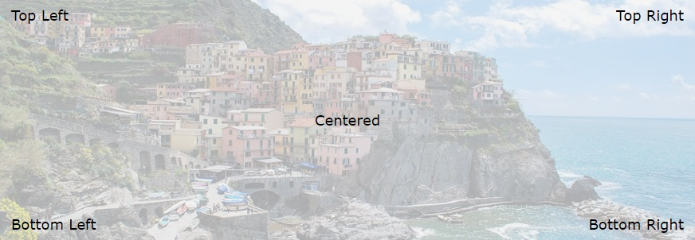

El CSS se usa para dar formato a un sitio web. Estos archivos se deben de guardar con las extensión .css
El CSS se compone de cuatro partes:
Selector
Permiten acceder a cualquier elemento o grupo de elementos, para aplicar estilos sobre el/ellos en una única declaración.
Para aplicar a una etiqueta un conjunto de estilos determinado, se escribe el selector y colocamos los atributos de estilos encerrados entre llaves:
Existen selectores de lo más variado, que permiten ajustar de una manera precisa qué elementos se desea seleccionar. Los más importantes son los siguientes:
Tambíen todo esto se puede combinar entre sí. Aquí un ejemplo:
Esto significa que obtienen las imágenes que tengan el atributo alt y los párrafos que tengan la clase "desactivado". También se puede combinar los selectores usando una coma.
Otros selectores:
| Selector | Ejemplo | Descripción |
|---|---|---|
| elemento elemento | div p | Selecciona todos los elementos <p> dentro de los elementos <div> |
| elemento>elemento | div > p | Selecciona todos los elementos <p> donde el padre es un elemento <div> |
| elemento+elemento | div + p | Selecciona todos los elementos <p> que se colocan inmediatamente después de los elementos <div> |
| elemento1~elemento2 | p ~ ul | Selecciona cada elemento <ul> precedido por un elemento<p> |
| :link | a:link | Selecciona todos los enlaces no visitados. (Enlaces) |
| :visited | a:visited | Selecciona todos los enlaces visitados. (Enlaces) |
| :hover | a:hover | Selecciona enlaces al pasar el ratón. (Acción del usuario) |
| :focus | input:focus | Selecciona el elemento de entrada activado por teclado. (Acción del usuario) |
| :active | a:active | Selecciona el enlace activo. (Acción del usuario) |
| :enabled | input:enabled | Selecciona cada elemento <input> habilitado. (Formularios) |
| :checked | input:checked | Selecciona cada elemento <input> marcado. (Formularios) |
| ::first-line | p::first-line | Selecciona la primera línea de cada elemento <p> |
| ::first-letter | p::first-letter | Selecciona la primera letra de cada elemento <p> |
Para empezar se crea el selector y dentro de él se añade color
Los colores podemos especificarlos de diferentes formas:
Colores RGB
Se especifica un valor de color RGB con: rgb ( ROJO, VERDE, AZUL).
Cada parámetro define la intensidad del color como un número entero entre 0 y 255. Ejemplo: p{color: rgb(0, 0, 255);} se representa en color azul.
Colores Hexadecimales
Se especifica con: # RR GG BB
Son enteros hexadecimales entre 00 y FF que especifican la intensidad del color. Ejemplo: p{color: #FF0000;}
Nombre de Colores
El CSS soporta 140 nombres. Para espeficicar el color solo hay que poner el nombre del color en inglés. Ejemplo: p{color: blue;}
Aquí hay una lista de los colores más comunes: Colores
El .class selecciona elementos con un atributo de clase específico. Por ejemplo div.class {background-color: red;}
Para que la clase creada tenga efecto en el HTML es necesario añadir el atributo class, de la siguiente manera: <div class="class">
Definen la familia de fuentes, la negrita, el tamaño y el estilo de un texto.
Familias de Fuentes
Hay dos tipos de nombres de familias de fuentes:
Familia tipográfica
La familia de fuentes de un texto se establece con la propiedad font-family.
La font-family debe contener varios nombres de fuente como un sistema "alternativo". Si el navegador no admite la primera fuente, intenta con la siguiente fuente, y así sucesivamente.
Nota : Si el nombre de una familia de fuentes es más de una palabra, debe estar entre comillas, como: "Times New Roman".
Estilo de Fuente
La font-style se usa principalmente para especificar texto en cursiva.
Tiene 3 valores:
Tamaño de Fuente
La font-size establece el tamaño del texto.
El valor del tamaño de fuente puede ser un tamaño absoluto o relativo.
El tamaño de puede establecer de 3 maneras:
Peso de Fuente
La font-weight especifica el peso de una fuente.
Variante de Fuente
La font-variant especifica si un texto debe mostrarse o no en letra minúscula.
Alineación
El text-align se usa para establecer la alineación horizontal de un texto.
Un texto puede alinearse a la izquierda o
derecha, centrarse o justificarse.
Hay 4 tipos de alineación:
Decoración del Texto
La propiedad text-decoration se usa para establecer o eliminar decoraciones del texto.
Transformación del Texto
La text-transform se utiliza para especificar letras mayúsculas y minúsculas en un texto.
Sangría del Texto
La text-indent se utiliza para especificar la sangría de la primera línea de un texto: text-indent: 50px;
Espaciado
Nota: Para aumentar se usa el símbolo + y para disminuir se usa el símbolo -
Aineación Vertical
La vertical-align establece la alineación vertical de un elemento. Ejemplo: vertical-align: baseline|length|sub|super|top|text-top|middle|bottom|text-bottom|initial|inherit;
A continuación se muestra una tabla con todos los valores posibles:
| Valor | Propiedad |
|---|---|
| baseline | El elemento está alineado con la línea base del padre. Esto es por defecto. |
| length | Sube o baja un elemento en la longitud especificada. Se permiten valores negativos. |
| % | Sube o baja un elemento en un porcentaje de la propiedad "line-height". Se permiten valores negativos. |
| sub | El elemento está alineado con la línea de base del subíndice del padre. |
| super | El elemento está alineado con la línea base superíndice del padre. |
| top | El elemento está alineado con la parte superior del elemento más alto de la línea. |
| text-top | El elemento está alineado con la parte superior de la fuente del elemento principal. |
| middle | El elemento se coloca en el medio del elemento padre |
| bottom | El elemento está alineado con el elemento más bajo de la línea. |
| text-bottom | El elemento está alineado con la parte inferior de la fuente del elemento principal. |
| initial | Establece esta propiedad en su valor predeterminado. |
| inherit | Hereda esta propiedad de su elemento padre. |
Las propide en CSS permiten hacer esto:
Tipos de Marcadores
La list-style-type especifica el tipo de marcador de elemento de lista.
Ejemplo:
Imagen como Marcador
La list-style-image especifica una imagen como marcador de elemento de lista:
Colocar los marcadores de Elementos
La list-style-position especifica la posición de los marcadores de elementos de la lista.
El modelo de caja tiene diferentes partes:
Ejemplo:
Propiedades del fondo:
Ejemplo:
La propiedad display especifica el comportamiento de visualización (el tipo de cuadro de representación) de un elemento.
Para ver más propiedades de display, haz click aquí
Posición
La position especifica el tipo de método de posicionamiento utilizado para un elemento.
Hay cinco valores de posición diferentes:
Posicionar texto en una Imagen
Ejemplo:
La propiedad float especifica cómo debe flotar un elemento.
La propiedad clear especifica qué elementos pueden flotar junto al elemento borrado y de qué lado.
Propiedad Flotante
La float se usa para posicionar y formatear contenido, por ejemplo, dejar que una imagen flote hacia la izquierda en el
texto en un contenedor.
La propiedad puede tener uno de los siguientes valores:
Propiedad Clear
La propiedad clear especifica qué elementos pueden flotar junto al elemento borrado y de qué lado.
La propiedad puede tener uno de los siguientes valores:
Desbordamiento
La overflow especifica qué debería suceder si el contenido desborda el cuadro de un elemento.
Esta propiedad especifica si se debe recortar contenido o agregar barras de desplazamiento cuando el contenido de un elemento es demasiado grande para caber en un área específica.
Nota: La propiedad solo funciona para elementos de bloque con una altura especificada.
Propiedad z-index
La z-index especifica el orden de apilamiento de un elemento.
Nota: El z-index solo funciona en elementos posicionados (posición: absoluta, posición: relativa, posición: fija o posición: fija).
| Valor | Descripción |
|---|---|
| display: table; | El elemento se comporta como un elemento <table> (Tabla). |
| display: table-row; | El elemento se comporta como un elemento <tr> (Tabla). |
| display: table-cell; | El elemento se comporta como un elemento <td> (Tabla). |
| display: flex; | El contenedor flex se vuelve flexible (Caja flexible). |
| flex-direction: column|row|-reverse; | Define en qué dirección quiere el contenedor apilar los elementos flexibles (Caja flexible). |
| flex-wrap: wrap|nowrap|wrap-reverse; | Especifica si los elementos flexibles deben ajustarse o no (Caja flexible). |
| flex-flow: flex-direction|flex-wrap; | Propiedad abreviada para establecer las propiedades flex-direction y flex-wrap. |
Se utiliza la regla @media para incluir un bloque de propiedades CSS solo si cierta condición es verdadera.
Ejemplo:
Para saber más del Media Quiries, haz click aquí